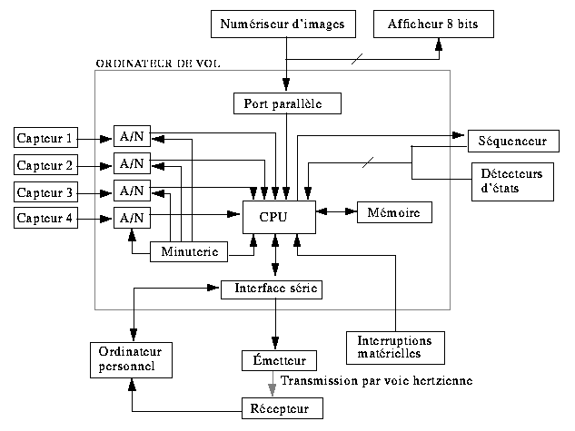

2.2
L'électronique
Maintenant que
la visualisation de chaque niveau de la fusée est faite, nous
pouvons attaquer la partie de l'électronique d' Apollon. L'électronique est
présente à plusieurs niveaux. Ses principaux modules
sont: l'ordinateur de vol, l'émetteur, la carte des capteurs,
le séquenceur, le panneau de contrôle et le
numériseur d'images. Le bloc diagramme de
l'électronique est présenté à la figure
2. Il permet de visualiser tous les liens existant entre les
différents modules.

Figure 2: Bloc diagramme de l'ordinateur de
vol
2.2.1 L'ordinateur de vol
L'ordinateur de
vol est le module électronique qui gère et dirige les
opérations tout au long de son périple, dans les airs
comme au sol. Il a la responsabilité de prendre les
acquisitions des différents capteurs, de les emmagasiner dans
une mémoire et de les relayer à l'émetteur.
Aussi, l'ordinateur de vol prend en note, à chaque
acquisition, la phase de vol de la fusée et son état,
à partir de petits détecteurs d'états. Ceci est
fait afin qu'on puisse interpréter les changements brusques
des données.
L'ordinateur de
vol est muni du micro-contrôleur (MC68HC11), lequel est
programmé pour prendre une acquisition des différents
capteurs (et des détecteurs) à tous les 10 ms. Il se
sert de ses convertisseurs A/N intégrés afin de
convertir le signal analogique, fourni par le capteur, en une
donnée numérisée sur 8 bits. Ensuite, le
MC68HC11 se charge de la transférer à
l'émetteur par le biais du port série et à la
mémoire externe, en vue de la récupérer
à la fin de l'expérience.
Aussi,
l'ordinateur de vol commande la prise d'image sur le
numériseur et doit assurer l'ouverture du parachute au bon
moment, décision prise au moyen d'un algorithme basé
sur la logique floue. Il utilise les données fournies par les
capteurs (vitesse et altitude) et le temps pour ensuite les traiter
et les analyser.
Au sol, avant
et après le vol, il sert d'interface entre la mémoire
de bord et l'ordinateur personnel. Il utilise son port série
asynchrone pour communiquer avec celui du PC. Il s'en sert avant
l'expérience afin de programmer les paramètres
adéquats pour l'équation de logique floue
(utilisés pour ouvrir le parachute). Lors du vol,
l'ordinateur de vol se sert aussi de son port série afin de
relayer les données à l'émetteur. À la
fin de l'expérience, la communication est de nouveau
rétablie afin de récupérer les données
emmagasinées dans la mémoire et celle du
numériseur d'images.
Le
séquenceur est un petit dispositif dans la fusée qui
sert de minuterie de secours pour l'ouverture du parachute. C'est
lui qui détecte le décollage de la fusée et qui
commande l'ampli de puissance qui fait sauter l'inflammateur,
nécessaire à l'éjection de la porte retenant le
parachute. Il est important que le séquenceur possède
une alimentation indépendante en plus d'être
isolé électriquement de tous les autres modules s'y
rapportant.
Une de ses
fonctions très importantes est le déclenchement
externe (ordinateur de vol) du mécanisme. Ce dernier doit
être géré par une fenêtre temporelle comme
celle illustrée à la figure 3. Le temps zéro
correspond au temps du décollage. Avant le temps T1, le
séquenceur interdit tout signal externe de faire ouvrir le
parachute. Entre T1 et T2, celui-ci donne l'autorisation, et
à T2, il force la commande.

Figure 3: Diagramme de la fenêtre
temporelle du séquenceur
2.2.3 Panneau de contrôle
Le panneau de
contrôle est le module qui permet à l'utilisateur de
commander et d'initialiser les autres modules en plus de recevoir
d'une façon visuelle des informations de ceux-ci.
De plus, il
sert aussi de carte-mère en inter-reliant les signaux de tous
les modules. Enfin, sa dernière fonction est de distribuer
les différentes alimentations.
2.2.4 Système d'acquisition d'images
Le
système d'acquisition d'images est constitué
essentiellement d'une caméra et d'un numériseur
d'images. Il sera situé dans le premier étage d' Apollon, à la place du second moteur
pour cette année. Les images pourront être acquises une
fois le premier étage largué.
La
caméra vidéo est reliée à un
numériseur d'images noir et blanc. Les images de dimension
256 x 256 sont numérisées sur 8 bits. Ce
numériseur possédera sa propre mémoire de 1 Mo,
ce qui permettra l'acquisition de 16 images durant le vol. Il est
commandé par l'ordinateur de vol et interfacé avec le
port parallèle de ce dernier.
A)
L'émetteur
L'émetteur est la partie électronique permettant
de transmettre, par voie hertzienne, les données recueillies
au récepteur se trouvant au sol. Ainsi, si par malchance un
problème électrique survenait au niveau de la
mémoire, aucune donnée ne serait perdue.
L'émetteur reçoit son signal du
micro-contrôleur, le module en fréquence, et l'envoie
dans l'air au moyen de l'antenne. Le signal à l'entrée
de l'émetteur est un signal série, c'est à dire
une série de 1 et de 0. Utilisant la modulation FSK, il n'a
qu'à convertir les zéros en une fréquence f1,
et les uns, en une autre fréquence f2. La plage de
fréquence allouée est située aux alentours de
136,5 MHz et la puissance minimale requise sera de 0,3 watt.
Au sol, le
récepteur capte le signal modulé et le retransforme en
un signal série. La sortie sera branchée au port
série de l'ordinateur personnel. Ainsi, le groupe
émetteur-air-récepteur ne simule en fait qu'un
câble série. Les données seront recueillies et
affichées en temps réel (avec un délai de
transmission) sur le moniteur de l'ordinateur.
B)
Système de localisation
Un
récepteur mobile s'occupera de localisation l'emplacement de
la fusée après son atterrissage. Il sera
principalement constitué d'un circuit relié à
quatre antennes. Le circuit compare le déphasage des signaux
reçus de chacune des antennes et donne la direction de la
fusée avec les possibilités illustrées sur la
figure 4.

Figure 4: Directions de localisation de la
fusée
2.3
Les expériences
Nous ne pouvons
pas parler d'une fusée expérimentale sans mentionner
ses expériences à bord. Pour Apollon, elles sont essentiellement la séparation du
premier étage, la prise d'images par caméra
vidéo, la double mesure de l'altitude (mesure de l'influence
de l'accélération sur les capteurs) et la mesure de la
déformation de la paroi.
Les mesures
d'altitude sont effectuées à l'aide de capteurs de
pression de type tube de pitot. La déformation de la paroi
est connue à l'aide de jauges de déformation. Dans
chaque cas, le signal fournit par les différents capteurs
devra passer par un ampli différentiel, puis être
filtré, pour ensuite être acheminé sous forme
d'un signal analogique vers le micro-contrôleur. Celui-ci se
charge de numériser et de mémoriser les
résultats afin de pouvoir les interpréter plus
tard.
Enfin,
plusieurs détecteurs d'états sont placés
à l'intérieur de la fusée afin d'indiquer
l'état de la fusée. Il y a un capteur pour la
détection du décollage, un pour la détection de
l'ouverture de la porte du parachute, un pour le déploiement
de celui-ci et enfin un autre pour la séparation de la case
moteur.
2.4
Logiciels
Nous
travaillons sur la conception d'un simulateur de données afin
de tester l'algorithme de décision pour l'ouverture de la
porte de la case parachute. Les données
générées sont acheminées par le biais
d'un port série vers la fusée. Ces données, qui
simulent ceux des capteurs en cours de vol, sont utilisées
par l'algorithme et ce dernier retransmet le résultat au PC.
Il est ainsi plus facile d'ajuster les paramètres de
l'algorithme.
3.
Résulat du lancement
Le lancement a eu lieu à la base
militaire de Valcartier vers 15h00 samedi le 13 septembre
1997. Les expériences emportées par Apollon comprenaient un capteur de pression
statique, des jauges de déformation devant mesurer les
déformations de la paroi de la fusée à sa base,
une séparation à mi-longueur de la fusée ainsi
que la prise de photographies numériques par une
caméra placée dans la fusée et libéree
par la séparation. Les jauges de déformation
n'ont pas été branchées compte tenu de
problèmes techniques quelques heures avant le lancement.
La mise à feu d'Apollon a été effectuée avec
succès. La télémétrie a
fonctionné jusqu'au moment de la séparation,
fournissant des données sur l'altitude et la vitesse de la
fusée. L'altitude à la séparation s'est
effectuée sans problème avec la mise à feu de
deux boulons explosifs. Toute transmission de
télémétrie a été perdue à
partir de la séparation. L'étage
supérieur de la fusée a continué une
trajectoire ballistique élevée compte tenu de
l'abandon de l'étage inférieur, qui a retombé
rapidement compte tenu de sa forme non aérodynamique.
Le parachute de l'étage inférieur a été
éjecté mais ne s'est pas déployé
correctement, causant une torche. L'étage
inférieur a été retrouvé à
environ 100 m du point de lancement. L'étage
supérieur semble avoir été endommagé, le
parachute ne s'étant pas déployé.
L'étage a été perdu de vue et jamais
retrouvé.
Membres du Gaul lors du projet Apollon |